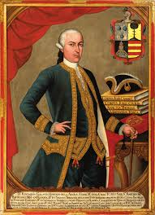
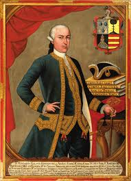

La Rebelión de Túpac Amaru II fue una de las insurrecciones indígenas más grandes e importantes de la época colonial en Hispanoamérica. Iniciada en 1780 , esta revuelta, liderada por José Gabriel Condorcanqui (quien tomó el nombre de Túpac Amaru II), se extendió rápidamente por vastas regiones del Virreinato del Perú y el Alto Perú (actual Bolivia), amenazando seriamente el dominio español.
Contexto y Causas
La rebelión fue el resultado de una acumulación de descontento entre la población indígena y mestiza debido a varios factores:
Explotación y Abusos: El sistema de la mita (trabajo forzado en minas, especialmente Potosí) y el reparto de mercancías (venta forzada de productos inútiles o caros por parte de los corregidores) generaban una miseria extrema.
Aumento de Impuestos: Las Reformas Borbónicas implementadas por la Corona española buscaron centralizar el poder y aumentar la recaudación fiscal, lo que se tradujo en más tributos y alcabalas para los indígenas.
Discriminación y Exclusión: A pesar de su linaje noble incaico, Túpac Amaru y otros curacas (caciques) veían limitadas sus posibilidades y sufrían la opresión del sistema colonial.
Mesianismo y Profecías: Un sentimiento de esperanza en el retorno de un Inca que restaurara el orden y la justicia prehispánica.
Desarrollo de la Rebelión
La revuelta comenzó el 4 de noviembre de 1780 con la captura y ejecución del corregidor de Tinta, Antonio de Arriaga. Rápidamente, Túpac Amaru II, presentándose como descendiente de los Incas, logró movilizar a decenas de miles de indígenas y algunos mestizos y criollos descontentos. Sus objetivos iniciales eran reformistas: acabar con la mita, los repartos y las aduanas internas. Sin embargo, la magnitud del levantamiento y la brutalidad de la represión española radicalizaron sus demandas hacia la expulsión total de los españoles.
Aunque Túpac Amaru fue capturado y brutalmente ejecutado en Cuzco el 18 de mayo de 1781 , su rebelión no terminó ahí. Su pariente, Diego Cristóbal Túpac Amaru , y otros líderes continuaron la lucha, extendiéndose con fuerza particular en el Alto Perú, donde el levantamiento adquirió tintes aún más violentos y radicales, especialmente con el asedio a La Paz. La represión española fue feroz, dejando un saldo de cientos de miles de muertos.
Impacto y Legado
La Rebelión de Túpac Amaru tuvo un impacto duradero:
Precedente para la Independencia: Aunque fracasó en su objetivo inmediato, la revuelta es considerada un importante antecedente de los movimientos independentistas hispanoamericanos del siglo XIX, al demostrar la vulnerabilidad del poder colonial.
Cambios en la Administración: La Corona implementó algunas reformas menores para apaciguar el descontento, como la abolición de los corregidores y la creación de las Intendencias. Sin embargo, también se endureció el control sobre la población indígena y se prohibieron manifestaciones de cultura incaica.
Memoria Histórica: Túpac Amaru II se convirtió en un símbolo de la resistencia indígena y la lucha por la justicia social en América Latina, siendo reivindicado por diversos movimientos políticos y sociales a lo largo de la historia.
 
